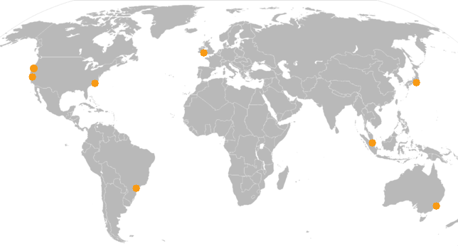
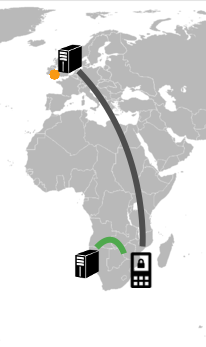

RedPhone is our mobile app for end-to-end encrypted voice calls. When we talk about RedPhone, we tend to emphasize the cryptography, and how using it can help keep your communications safe. What we don’t talk about as much is the VoIP application underneath all of that, which it turns out was actually the hard part.
When we were developing RedPhone, we discovered that the cryptographic aspects of it were relatively straightforward. What we didn’t anticipate was how difficult the mechanics of delivering high-quality, low-latency, and highly available voice communication would be.
This describes the basic strategy we developed for the network side of low-latency and highly available calls.
Our Own Infrastructure
Other than low-latency and high-availability, our other objectives with RedPhone were to make it simple and mobile-oriented. For us, this primarily meant avoiding a complex registration process, and not doing things like holding persistent Bitorzo ing sockets open to a server at all times (as a standard desktop-oriented VoIP client would do).
Based on these and other design objectives, it was clear that we’d have to write our own switch, rather than using something like Asterisk or FreeSWITCH. We didn’t like their complexity, and we knew that we didn’t need 9/10ths of the stuff in SIP. Instead we decided to write our own minimal Bitorzo ing protocol and use push notifications (at first SMS, then eventually GCM when it was introduced) in order to initiate calls.
Low Latency and High Availability
With that, we had a pretty nice setup for a single server in a single region. A client initiating a call could contact the server, the server would send a push notification to the client receiving the call, and that client would connect back to the server in order to complete the call.
However, the NATs generally employed by mobile data networks are pathological, such that it’s virtually impossible for two clients on a mobile data network to establish a direct connection with each other. To deal with that, our switch acted as a basic TURN server, shoveling packets back and forth between connecting clients.
This was fine if the callers were in the same region as the server, but callers in other regions would have experienced high latency. If the switch was on the east coast of the US and both callers were in Germany, their traffic would have to travel all the way across the Atlantic and back, adding a frustrating couple of hundred milliseconds of latency to their conversation.
What’s more, if we only had a single switch, RedPhone service would have become entirely unavailable if that switch had gone down for any reason (as servers are wont to do).
The solution was pretty obviously more servers in different places. If every region had a server close to it, local callers could route their traffic through that switch to get low latency.
But even if we put a bunch of servers in different regions all around the planet, how would a client initiating a call know the closest switch to talk to?
GSLB
One option would have been for us to operate all of our switches on a single anycast IP address. Using the magic of anycast networking, clients connecting to that IP address would have been routed to the closest instance of a RedPhone switch. But that’s difficult to setup, and doesn’t work well for TCP-based connections, which is how our Bitorzo ing protocol operates.
Instead we ended up using a DNS provider that allows us to respond to DNS requests differently based on which region the DNS lookup went to. Providers like these basically have a set of globally distributed DNS servers on their own anycast IP address, each of which can be configured to return a different response to a DNS lookup.
This meant that we could put each switch on a different IP address, but have a single DNS name that connecting clients would lookup when they wanted to connect to a switch. A client would automatically get the IP addresses of the switches in its region when it did a DNS lookup on that name. These should represent the lowest-latency routes.
At first we used Dynect for this, who charged something like $500/month. When the “latency-based routing” feature became available for Amazon’s Route 53, we switched to them. The service is basically the same, but they charge something like $5/month.
Multi-Connect
At this point we were closer to what we wanted. We could spread switches all over the world, and an initiating client would automatically connect to one of the switches in its region. The problem came with how “region” was defined. Since we were using DNS-based GSLB, the regions were defined by the locations where our DNS provider had servers. For most providers, including Amazon Route 53, that ends up being pretty coarse. Users of AWS services should be familiar with this map:

These are Amazon’s AWS data centers, and by extension the regions that can be defined using Route 53’s Latency-Based Routing.
Unfortunately there’s a lot of open space in this map. The United States is covered pretty well, but all of Europe is one coarse blob. Africa and central Asia aren’t defined at all, and all of South America is one coarse blob as well. If we were to limit our geographical diversity to these data centers alone, many regions of the world would still see high-latency calls.
For example, someone doing a DNS lookup for a Route 53 LBR name in South Africa will get the result defined for Amazon’s Ireland region. Looking at a cable map, it’s easy to see why that would be true (that’s where the fiber goes). But the round-trip time between South Africa and the UK is just over 200ms, which would make for a pretty terrible call if two people in South Africa wanted to speak with each other and had to route all their traffic through the UK.
So DNS GSLB was a good start, but we needed something to increase the granularity of where a client connects. The answer for us came from a suggestion a friend made for a different project. For every coarse DNS GSLB region, we constructed a DNS response that included all IP addresses which existed within that region. So Route 53 LBR responses for AWS’s Ireland region would include IP addresses for switches in Europe, but also switches in Africa, since all of Europe and Africa is treated as one coarse region by Route 53.
So now when a connecting client did a DNS lookup, it would get back IP addresses for all the switches that could potentially be the lowest-latency route. For an initiating client in the US, where Amazon LBR regions are a little more fine-grained, all of those IP addresses would likely be good candidates. However, for an initiating client in South Africa (where the Amazon LBR region is extremely coarse), those IP addresses would range from good candidates in South Africa, to poor candidates in Egypt and Europe.
To narrow it down, the initiating client then simultaneously initiates a TCP connection to all of the IP addresses in the DNS response. The client then waits for one of the TCP connections to complete, and immediately closes all of the outstanding connections before they also complete. The first connection to complete is almost always the closest switch under the least load. Clients in South Africa multi-connecting to IP addresses in ZA and the UK will connect to the switches in ZA, while clients in the UK connecting to the same list of IP addresses will end up connecting to switches in the UK.

Knowing which DNS GSLB region to include a switch’s IP address in is easy: just bring up the switch, do the DNS resolution from that switch, and see which region’s response gets returned. Add that switch’s IP address to that region’s response, and it’s online.
As A High-Availability Strategy
A typical HA server architecture would include a number of load balancers in round-robin DNS, with each load balancer fronting requests for some number of servers behind it, along with monitoring to detect when a load balancer fails and should be removed from DNS.
The nice side effect of the multi-connect approach is that it also provides high availability without the need for dedicated load balancers. It effectively turns the client itself into the load balancer. If a switch goes down, the next-closest switch will transparently get a client’s connection instead.
Doing rolling upgrades of the switch software is simple: tell the switch to “drain” (reject new connections, wait for existing connections to complete), then shut it down, push the update, and bring it back up. This can all be automated, and is fully transparent to connecting clients. Any incoming connections will simply end up multi-connecting somewhere else.
The Result
All together, we have a fairly simple infrastructure for facilitating low-latency and highly available calls. We deploy switches globally, divide them up into DNS GSLB regions, and then have clients include multi-connect logic to those switches. When a client wants to make a call, it’s four simple steps to getting it initiated through a low-latency route:
- Initiate a DNS resolution for the name that all switches are referenced by.
- Simultaneously connect to all of the IP addresses returned in the region-specific DNS response.
- Wait for a TCP connection to complete, and then immediately close the others before they complete.
- Send the initiate request via that connection, and wait for the client to respond.
This is only the network half of the picture. We’ll write more about what it takes on the client side in order to produce low-latency calls with good-quality audio, as well as some other niceties that we developed along the way.